Celebrating Our Family · 2024–2026
From graduations to new babies, new callings to retirements — here's what the Hill Family has been celebrating these past two years.

Welcome, Everleigh Joyce Williams! 🎉
Daughter of Michael Williams Jr. Granddaughter of Rev. Leslie Williams and Rev. Michael Williams Sr.
Keyera & Trevon Barnes
Keyera is the granddaughter of Alberta McEachin and the great-granddaughter of the late Morris Cash, Jr.
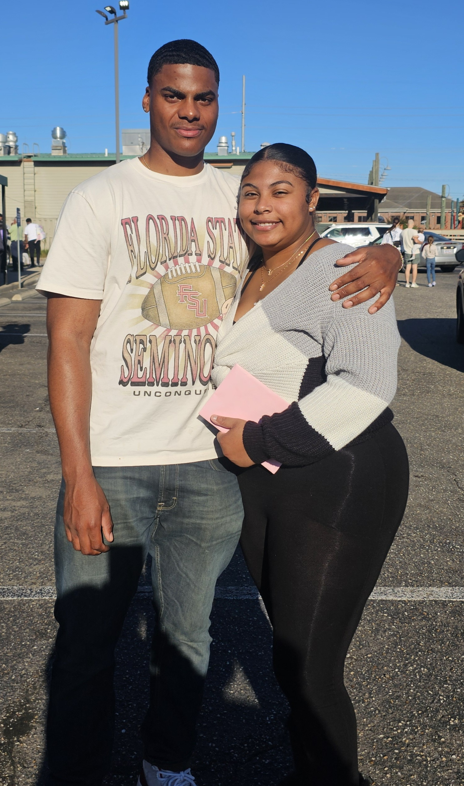
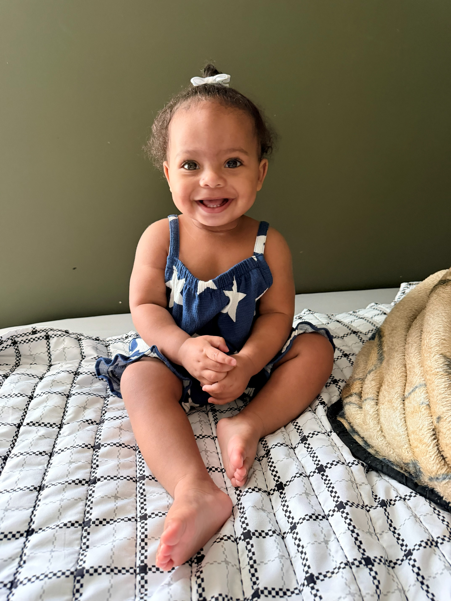
Akira Yvonne Barnes, daughter of Keyera and Trevon, is the great-granddaughter of Alberta McEachin and the great-great-granddaughter of the late Morris Cash, Jr.
Congratulations to All Graduates & Achievers
Jhe'Nisis Juliana Ta'Niya Diaz — Kindergarten 2024
Salia Googe — Newman International Academy
Janelle Hudkins — The Main St. Academy School
Major Bradley — Cardinal Elementary School Kindergarten
Morgan Hill — West Hempstead Middle School 2022
Samyia Googe — Fayetteville H.S.
Shakara Googe — Attending Southern University
Jalen Googe — Attending Hendrix College
Taylor Dorsett Hill — H.S., Attending Auburn University
Akari Zyell McEachin — Graduated Western Harnett High School, May 2026
Irene Hudkins — Atlanta Metropolitan State College, Religious Studies
Danielle Bryant — Master's Degree, Mercer University
Karen Currin — Georgia State University
Michael Williams — Heritage Christian University Graduate School of Theology
Calvin Currin — White Coat Ceremony, Physician Assistant
Mary Allen — Quilt of Valor for Military Service
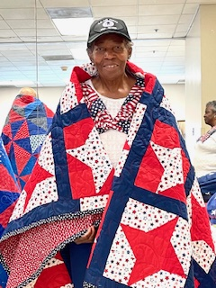
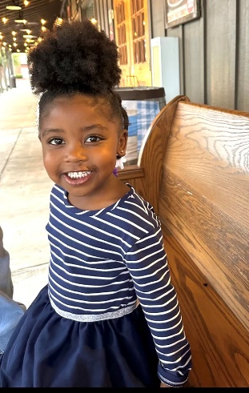
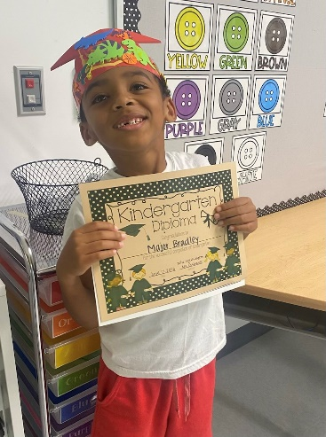
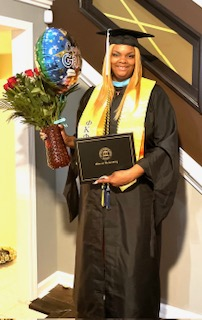
Steven Goings
Steven's mother is Yvonne Kirland (maiden name Scott), daughter of Yvonne Scott (maiden name Evelyn Hill), who was raised as the loving sister of patriarch Uncle Ray Hill.
Feb 2024: Received California State University Monterey Bay (CSUMB) All Black Gala "Alumni Award"
June 2024: Named Grand Marshal of Monterey Peninsula Pride, an organization he helped found in 2017
Aug 2024: Began private practice as a Licensed Clinical Social Worker
Feb 2025: The "CSUMB Steven Goings Perseverance Award" was established in his honor, given annually to a graduating senior at the African Heritage Affinity Group Graduation Celebration
Feb 2026: Received the CSUMB Recognition of Service Award at the Students with Disabilities Affinity Group Graduation Celebration
Aug 2026: Will teach his first graduate course, Diversity and Social Justice, for CSUMB's Master of Social Work Department
Rev. Leslie Williams
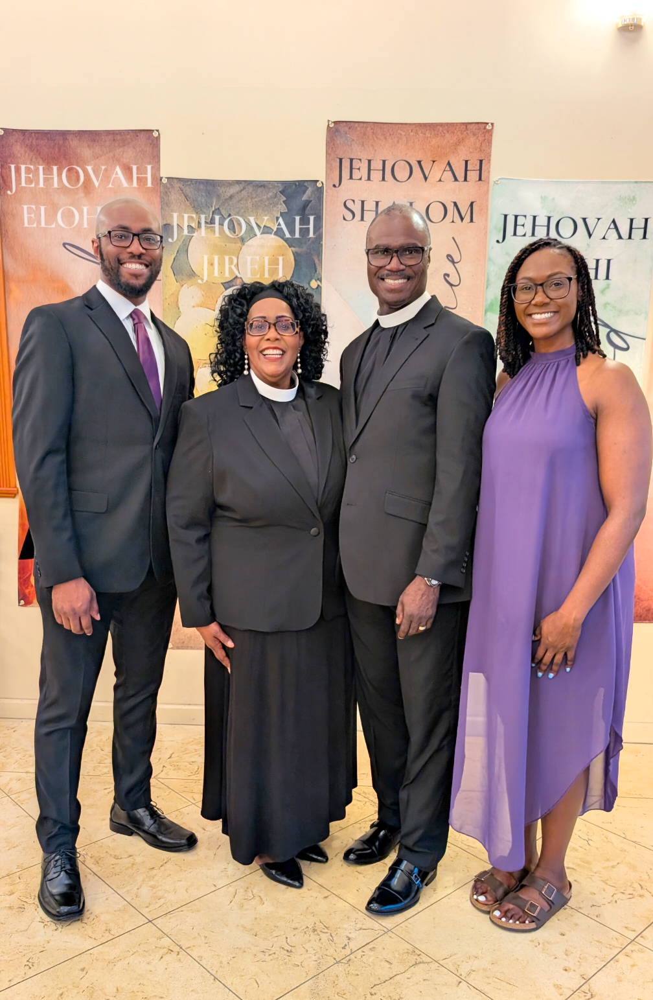
A devoted member of Abundant Life Fellowship Church for nearly 31 years, Rev. Williams has served in numerous ministry leadership roles, including Youth Leader, Missionettes Ministry Co-Leader, Women's Ministry Co-Leader, and Couples' Life Group Leader. On her birthday, June 28, she reached another remarkable milestone by answering God's call through ordination. We thank God for her faithful service and pray He continues to bless, strengthen, and use her for His glory.
Rhonda M. Fowler (Walker)
March 2025: Husband Sydney retired again (previously military-retired), this time as a civilian after 19 years with the Air Force
Oct 27, 2025: Rhonda turned 60
Oct 28, 2025: Rhonda retired as a civilian after 28 years with the Air Force
Oct 29, 2025: The couple flew to the Republic of Panama for five months
June 22, 2026: Left San Antonio; will return in March 2027
Eloise Morris & Siblings
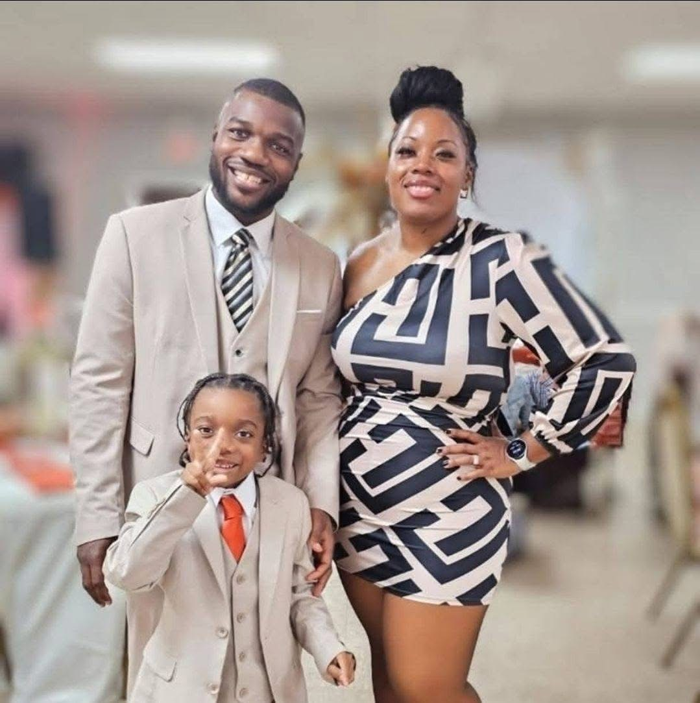
Aziza Bryd (34), oldest sibling — she and her husband Ravon co-own Blow It Up Productions (bounce houses, balloon twisting, face painting) and are busy raising son Ravon Jr. Aziza is representing this branch of the family at the 2026 reunion.
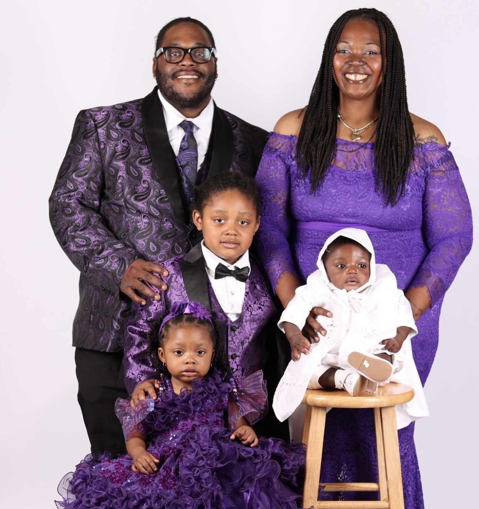
Eloise Morris (31) — married to Rashawn Morris; three kids, Rashawn Jr., Eliana, and Amir, who joined the family last year. Both Eloise and Rashawn are in college — she's studying Criminal Justice with hopes of becoming a police officer, and he's studying Sports Management. Together they own Boss Bounce Party Rentals.
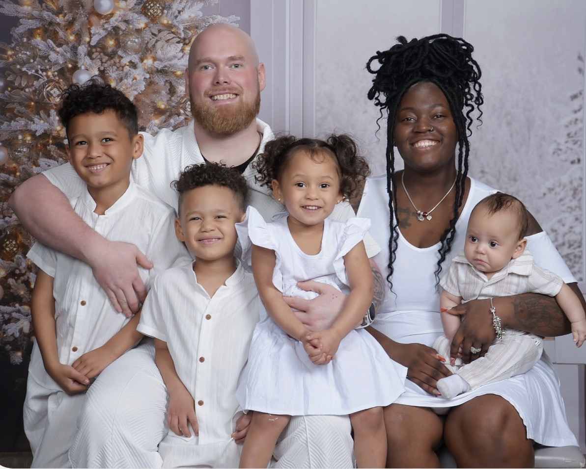
Arielle Parland (30) — engaged to Jonathan Coley; recently welcomed newest baby Jonathan Jr., joining siblings Amelia, Kamden, and Braden. Arielle is starting a new career in the insurance industry.
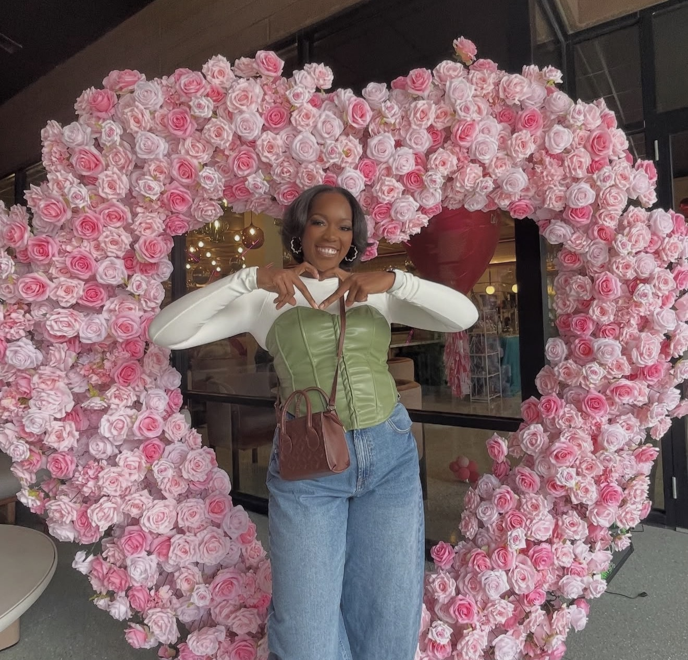
Asmahani Parland (29) — engaged to Isaac; built a successful beauty business, Kiya Styles.
Andre "Kenneth II" Parland (26), youngest sibling — has built a successful career in automotive sales.
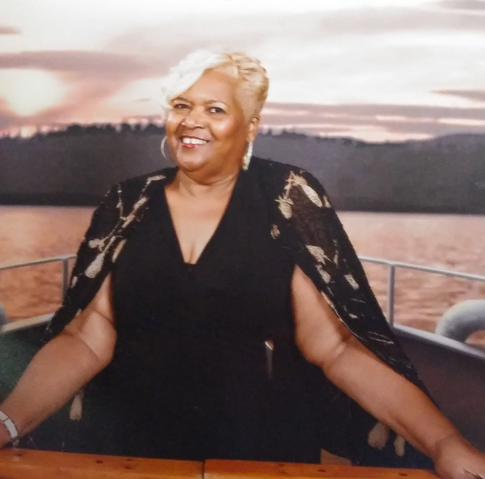
Irene Parland Hudgins & Family
Daughter of Charles and Janie Bell Maxwell Parland, and granddaughter of Isabell Hill Maxwell. Married to Robert Hudgins. Irene and Robert are the proud parents of Danielle Hudgins Bryant, and proud grandparents of Janelle (16), Jayden (15), and Nevaeh (12). Her grandmother's children were first cousins to Dr. W. Ray Hill, our family patriarch.
During the past two years, Irene served as Chairman of the Atlanta Area Council (AAC) of the American Business Women's Association (ABWA). She represented the council at the annual National Women's Leadership Conference in Denver, Colorado; Kansas City, Kansas; and Portland, Maine. In September, she plans to attend the national conference in Sugar Land, Texas.
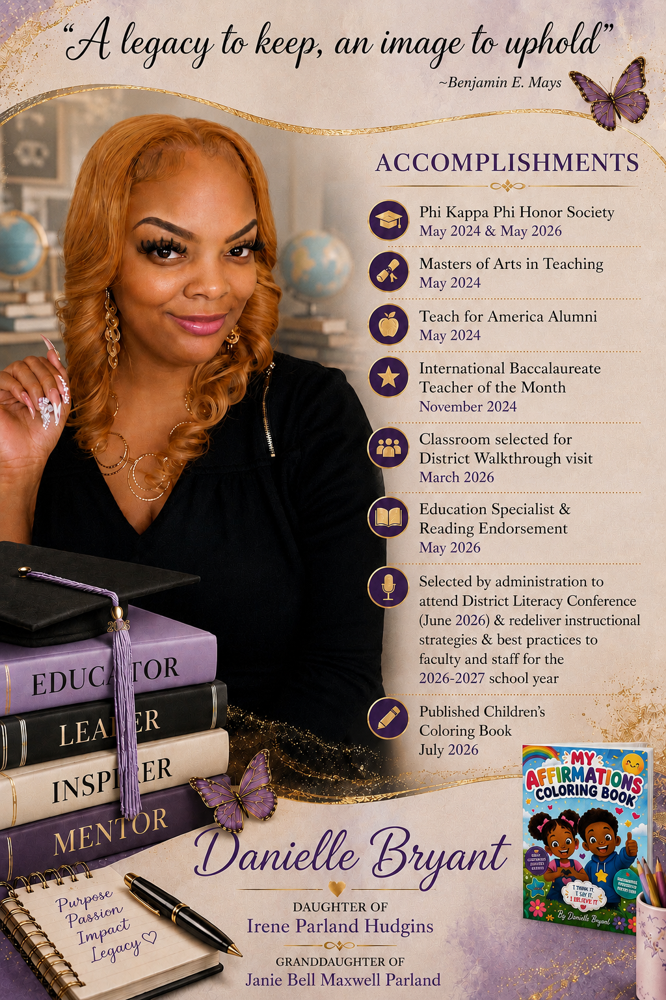
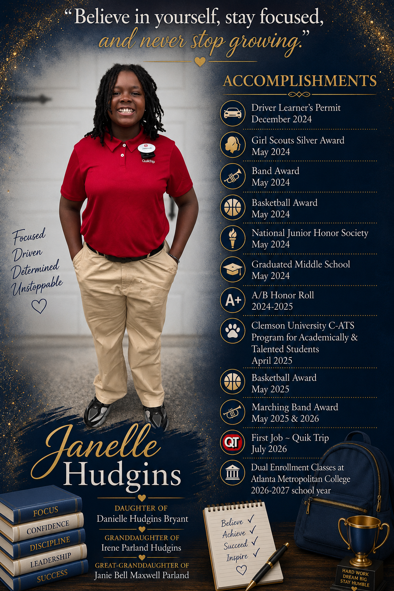
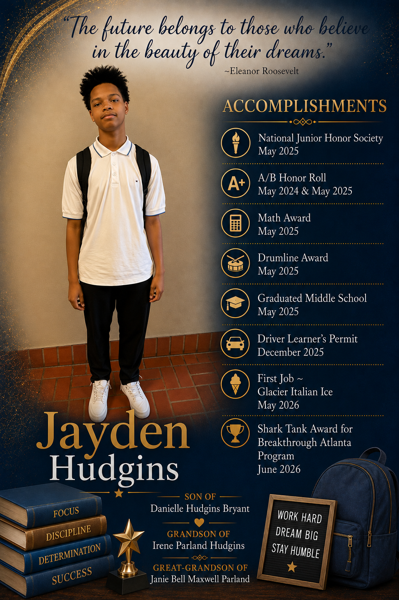
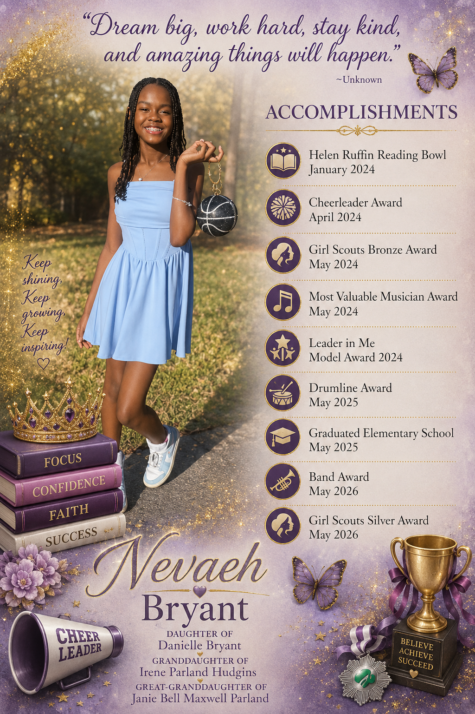